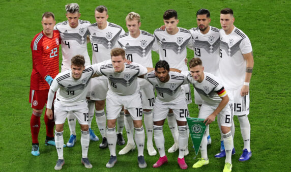

A seleção alemã participou de sua 19ª edição da Copa do Mundo de futebol em 2018. A eliminação na 1º Fase da Copa do Mundo de 2018 marcou a pior campanha da Alemanha em Copas do Mundo. Ainda assim, os alemães tem um rendimento impressionante nos Mundiais. Os alemães venceram quatro Copas do Mundo (1954, 1974, 1990 e 2014), foram vice-campeões em 1966, 1982, 1986 e 2002; terceiro lugar em 1934, 1970, 2006 e 2010 e quarto lugar em 1958. A seleção alemã chegou 13 vezes entre os quatro primeiros. A seleção alemã também é a maior vencedora junto à Espanha da Eurocopa, o Campeonato europeu de seleções. A Alemanha conquistou o torneio três vezes (1972, 1980 e 1996).
Os alemães venceram quatro Copas do Mundo (1954, 1974, 1990 e 2014), foram vice-campeões em 1966, 1982, 1986 e 2002; terceiro lugar em 1934, 1970, 2006 e 2010 e quarto lugar em 1958.
| Data/Hora | Estádio | Adversário |
|---|---|---|
| 23 nov 2022 / 10h00 | Estádio Internacional Khalifa | Japão |
| 27 nov 2022 / 16h00 | Estádio Al Bayt | Espanha |
| 1º dez 2022 / 16h00 | Estádio Al Bayt | Costa Rica |